3.4 面试题生成模块¶
一、工作流介绍¶
功能：接收用户的简历，结合面试题宝典的数据和录入到面试题记录中的面试题数据，生成面试题
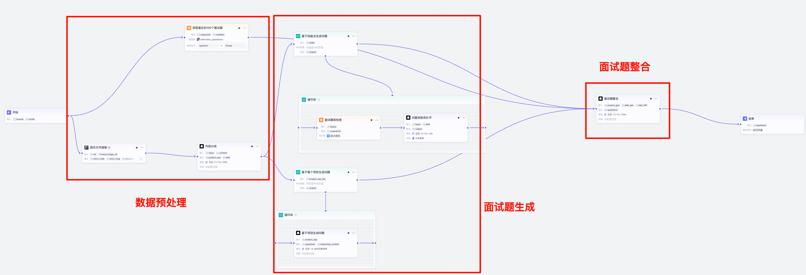
具体步骤如下：
- 输入：简历文件
- 执行流程：
- 数据预处理：准备最近100个面试问题， 解析简历文件中的技能和项目部分的内容
- 面试题生成：基于技能点生成技术类问题， 基于项目部分的内容生成项目类问题
-
面试题整合：把最近的100道面试题
-
输出：面试题集合
二、实现数据预处理¶
数据预处理部分如下图，主要是两部分：
- 解析简历文件中的技能和项目部分的内容：从简历中提取出来对应的部分的文字，并进行分块
- 准备最近100个面试问题：从数据库中查询最近100道面试题
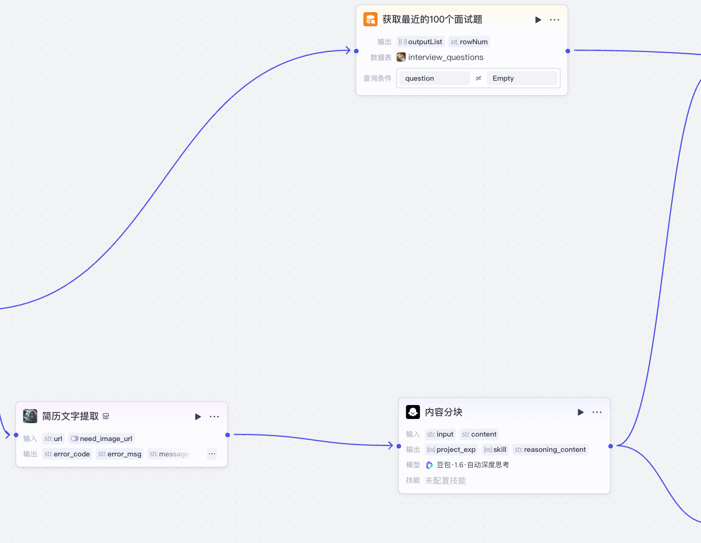
1 解析简历文件中的技能和项目部分¶
有些细心的同学或许已经注意到，这里的简历文字提取和内容分块部分的内容和“简历评估模块”基本类似，所以我们可以直接复用这一部分的内容。coze的工作流的画布上，我们通过鼠标框选 + 复制的， 再在新的画布中进行粘贴，即可复用。
粘贴过来以后，我们需要做的就是基于业务再进行修改：
- 简历文字提取部分：这部分完全一致，目标都是要把pdf和doc的文档转化为文本格式，不需要修改
- 内容分块部分：我们生成面试题的时候只需要依赖技能和项目两个部分即可，所以在原版内容分块结果的基础上要做一次减法，只保留技能和项目部分即可。同时对于技能部分，要拆分成更细的技术点，以便更好的生成对应的面试题。
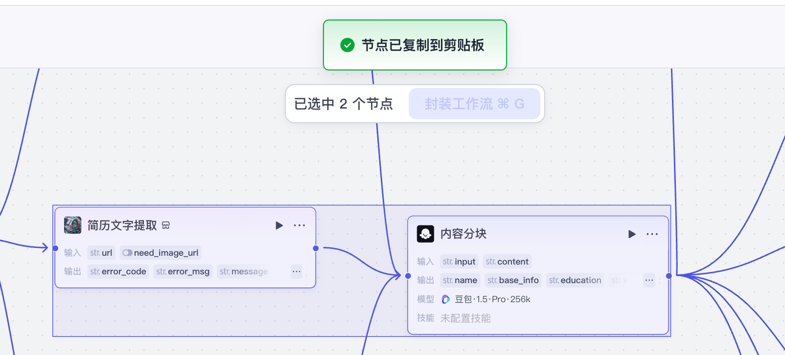
简历问题提取部分略， 内容分块部分我们这里使用豆包1.6深度思考模型，同时修改提示词，如下：
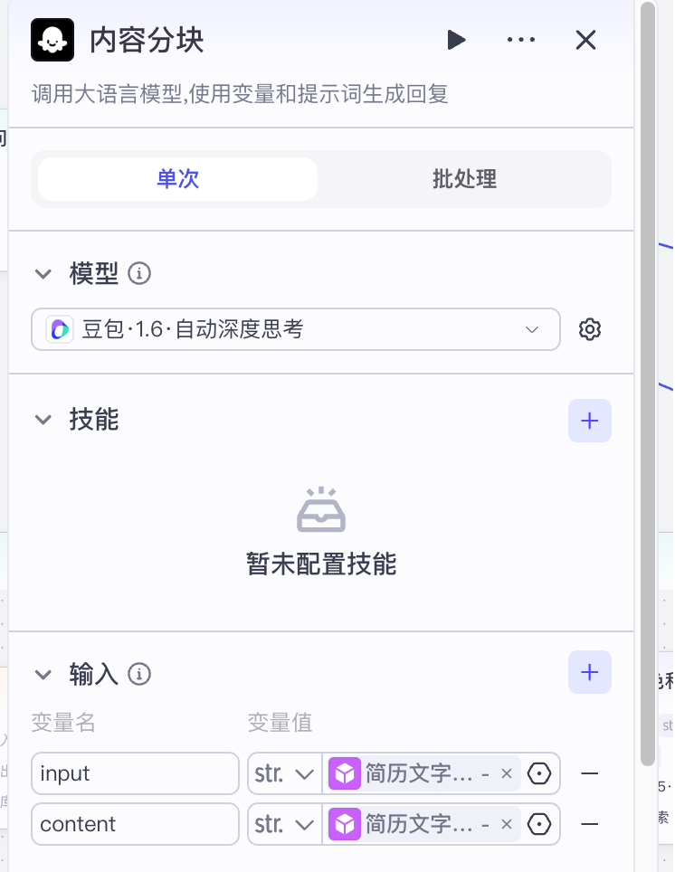
系统提示词：
你是一个大模型和算法工程师简历内容提取助手，能够根据简历中的内容提取出来对应的实体。你将接受简历内容作为输入，并按照下列要求进行拆分，并输出为json格式:
个人技能：字段名 {{skill}}, 个人掌握的IT相关的技能，按行按内容拆分，拆分成尽可能多的单独的技术点，并最终以字符串数组返回
项目经验：字段名 {{project_exp}} , 包含简历上所有项目相关的、以及在简历内容的第几部分，每个项目作为数组中的一个元素返回，最后返回一个字符串数组，数组长度和项目数一致
注意，以上的要求需要严格遵循，除了上下文以外，其他的内容不要省略和总结，直接拆出来原文即可，不要出现错误的划分
这里需要注意，拆分技能点的目的是为了让生成问题更加精准。 一般按照大部分简历的编写方式，一行技能介绍里面往往包含多个技能点：
- 比如：“熟悉深度学习原理，对RNN、LSTM、Transformer的原理有深入的研究，熟练使用pytorch搭建神经网络”。 这句话中涉及到多个技术点， 如果我们直接基于这句话生成一个面试题，是比较困难的。所以这里我们要“换位思考”，站在业务的角度，也就是简历的使用者（面试官）的角度去思考，怎么使用。
- 一般来讲，面试官拿到简历后，会针对简历上的内容结合岗位的需求，针对性提问，比如岗位对于深度学习算法基础要求比较高，那么会针这条内容中的每个点进行详细的提问。所以我们在这个阶段，需要把技能点拆分到最细。
用户提示词：
输出：
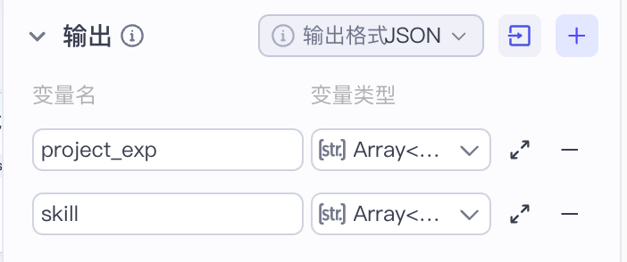
2 获取最近的真实面试题¶
首先，我们获取“最近100道面试题”的来源，是来自于我们在“录音分析模块”工作流中创建的面试题，数据库结构如下：
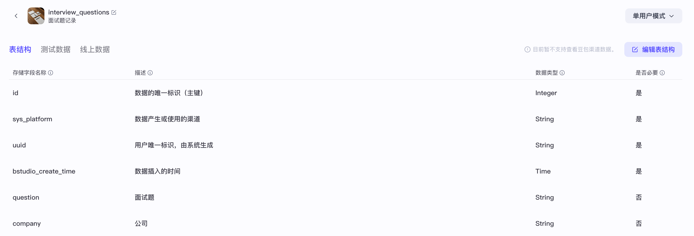
这里的面试题主要来自于学生面试录音中获取到的各类面试题，也可以手动导入一部分数据，这里我们可以选择的策略比较多，比如：
- 取最近100条
- 随机无放回抽样100条
- 按照某种分布，比如：大模型50条，其他的加起来50条等
- ......
这里抽样的策略可以有很多，我们上面列举的方式实现难度从上到下对应着由易到难，同时效果也会由好到坏。但是鉴于我们是出于项目初期：
- 面试题的记录没有很多，最好的抽样方式和最简单的效果上查不了多少
- 基于coze这个框架，实现无放回抽样100条和按照某种分布进行抽样会把这个问题复杂化，投入更多的人力成本
因此，我们这里选择使用：取最近100条，如下图：
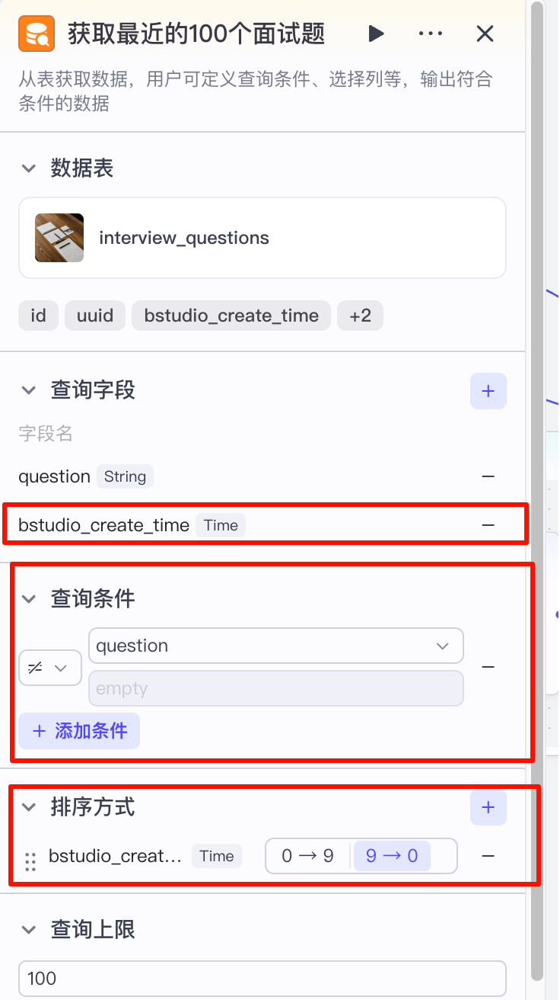
这里我们看一下：
- 查询字段：除了question以外，我们还需要查询出来bs_studio_create_time字段，这个字段是在数据插入数据库时取的当时时间，也就是数据写入时的时间，用于排序
- 查询条件：question不为空，因为我们存入的时候就不存入空的数据，相当于查询所有的数据
- 排序方式：使用bs_studio_create_time作为排序字段，并选择倒序排列的方式
最后返回100条，就是最近的100道面试题。
三、实现面试题生成¶
生成面试题分两个部分：基于技能生成面试题、基于项目经验生成面试题，都是基于内容分块的结果，拿到各自需要的信息，并进行循环处理。
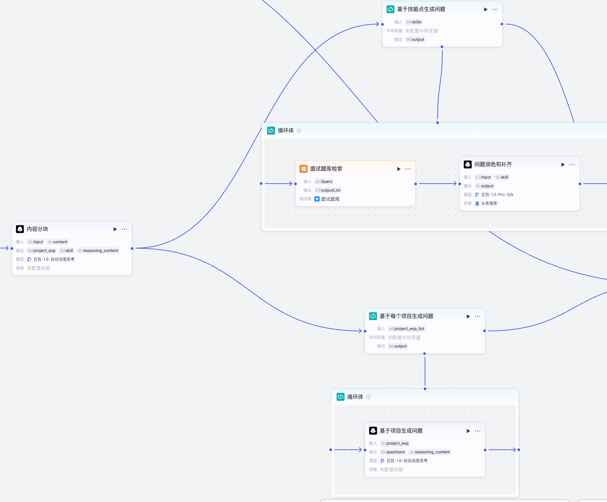
1 基于技能点生成面试题¶
基于技能点生成的问题功能接受数组类型的技能点信息，并循环遍历，检索面试题面试宝典题库，并进行分润色和补齐
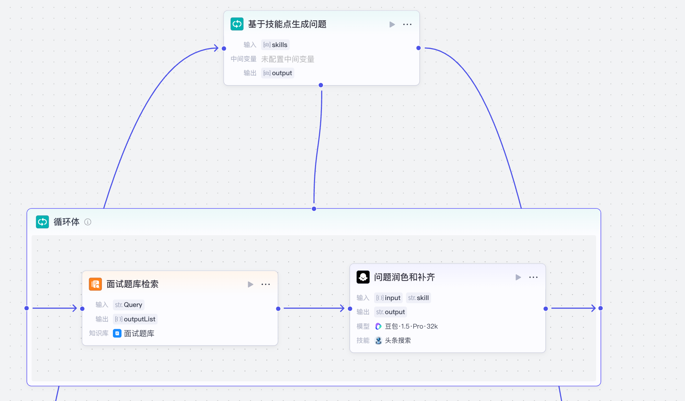
循环体的输入输出如下：
- 输入：拆分后的技能点数组
- 输出：每个技能点对应的面试题
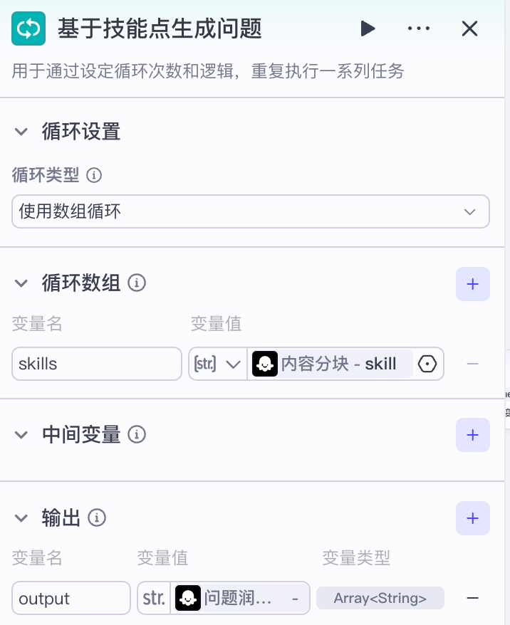
接下来我们看一下面试题题库检索部分：
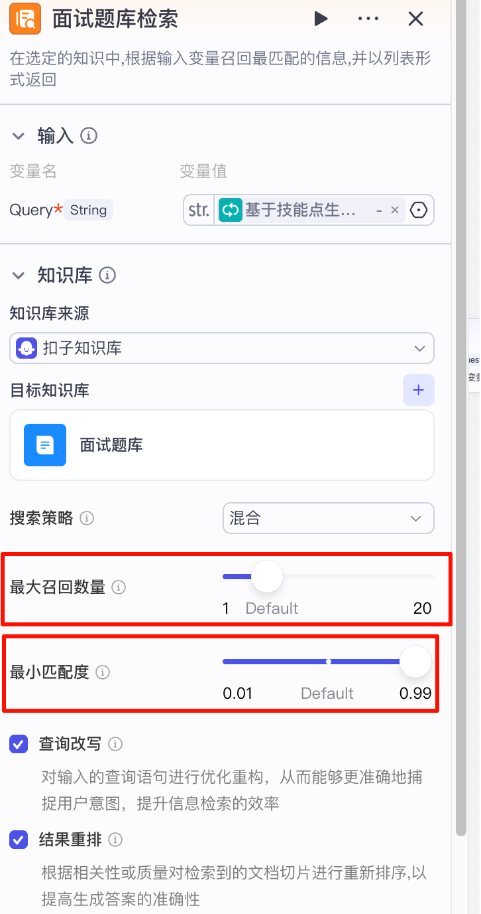
这里需要注意：
- 最大召回数量：设置5，同一个知识点可以有多个问题
- 最小匹配度：设置0.9，这里查询出来的结果后续要给到大模型进行处理。这里需要对检索出来的内容的相关性要求更加严格，防止检索出不相干的问题
开启查询改写和结果重排，以便提升查询效果。
接下来是问题润色和补齐部分，接收查询到的面试题和对应的知识点，对面试题进行生成：
- 因为查询到的内容往往是一个段落，有的可能是面试题题目+答案，这里我们只需要答案。需要依赖大模型进行问题的精简
- 面试宝典无法涵盖所有的技能点，会存在查询不出来结果的情况，这里我们需要做个兜底，从互联网上获取
因为问题的润色和联网获取对模型的推理能力要求不高，所以在这里我们选择豆包1.5Pro的32K即可满足需求。
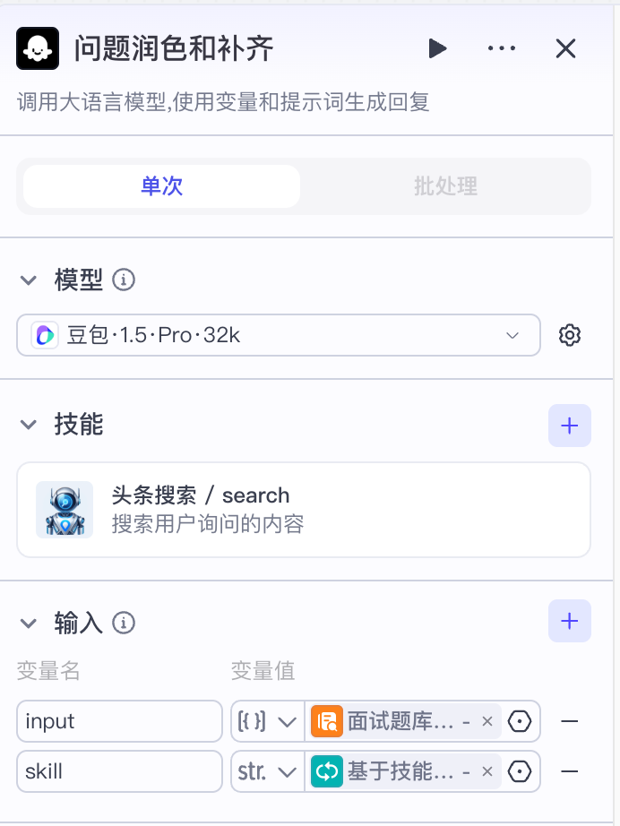
系统提示词：
你是一个大模型算法的面试题生成专家，能够根据输入的技能点和面试题题库中相关的内容，生成对应的面试题。如果没有检索出来的内容，请查询互联网并生成对应的面试题
注意：
1. 问题难易适中，不要故意刁难，也不要简单到三言两语就能说清楚
2. 从面试题中总结出来的问题要完整，具有良好的可读性。如果查询出来的结果中有问题原文，直接保留原文即可。
用户提示词：
2 基于项目经验生成面试题¶
基于项目生成面试题部分，因为项目中的内容对比技能不属于通用知识，所以这里我们不进行检索类的操作，而是根据每个项目中的内容，基于提示词生成对应的面试题。所以在这个部分，提示词的质量直接影响着面试题生成的效果。
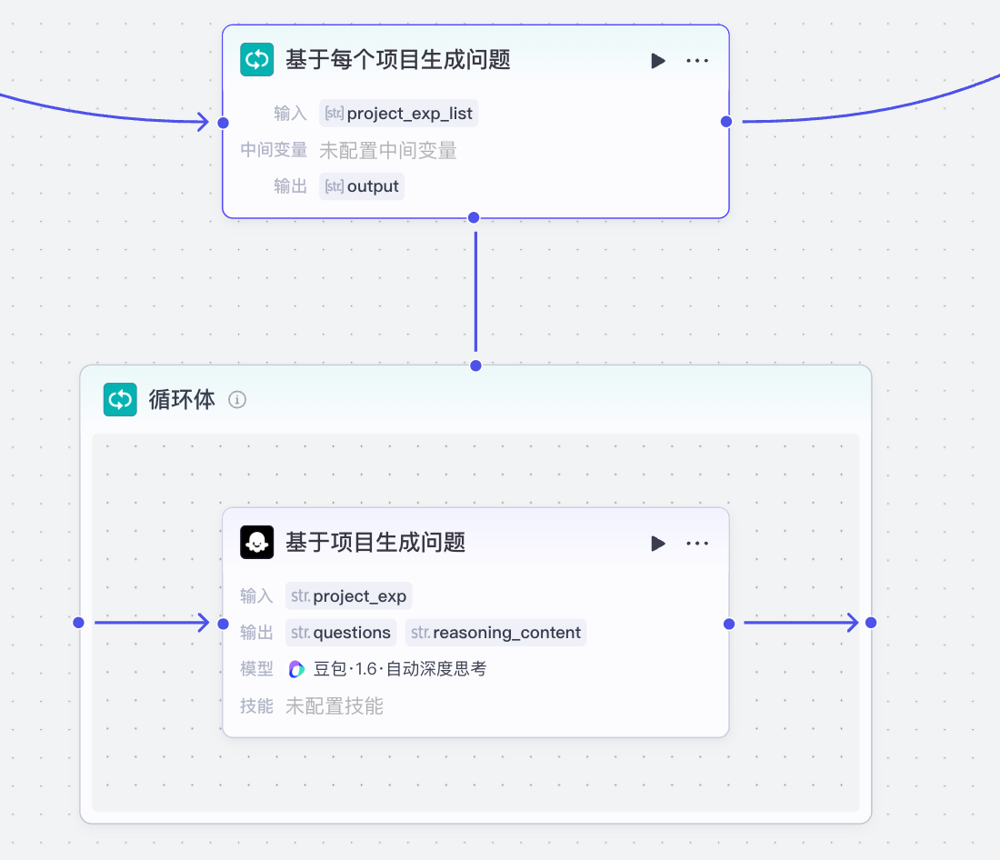
循环体基于简历内容拆分出来的项目经验部分字符串数组作为输入：
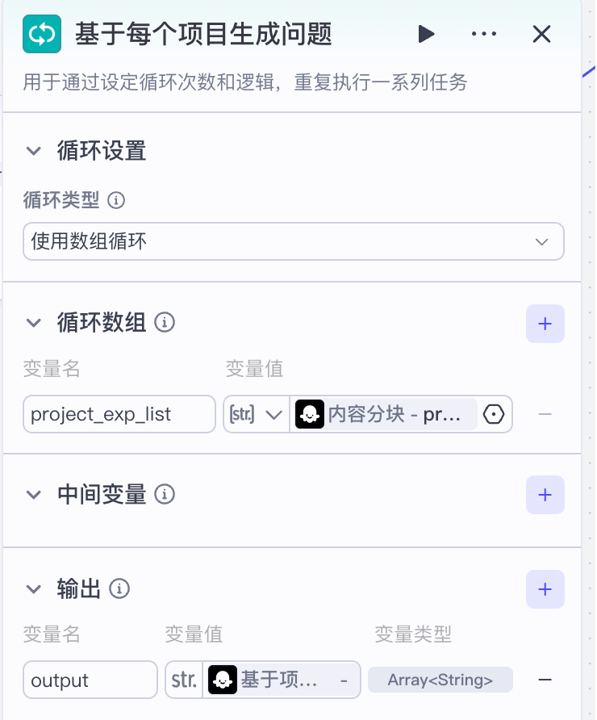
循环体中，每次循环处理的是一个项目的全部内容，涉及到推理，所以在这里我们需要使用效果最好的模型，也就是豆包1.6深度思考模型。
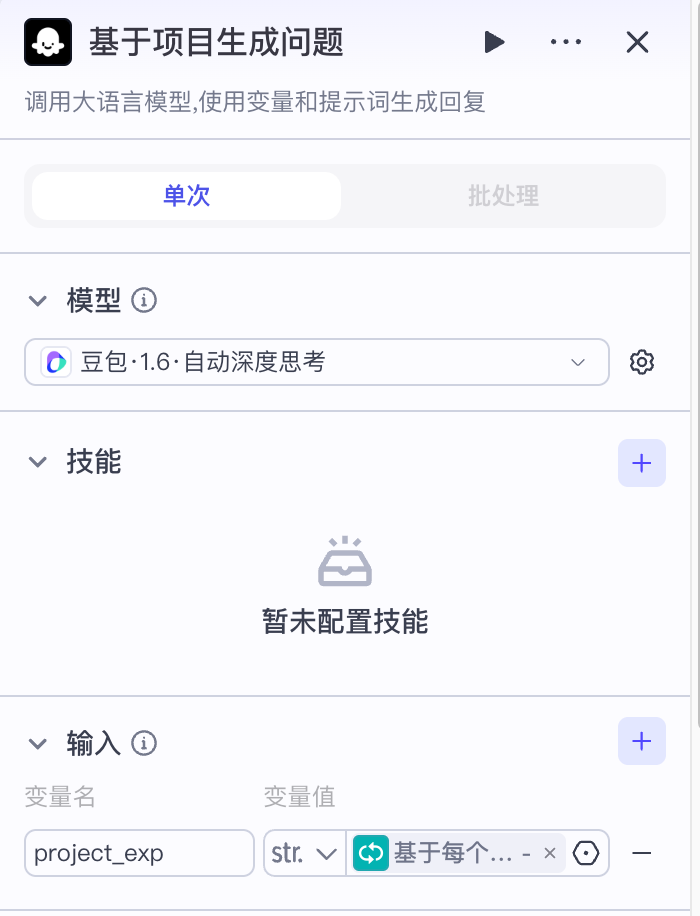
系统提示词：
你是一个大模型算法专家，能够根据用户的项目内容提问高质量问题
注意：
1. 对于项目的业务背景部分，找到可疑的点，提问用户。尤其是是质疑背景的真实性，如果觉得项目的立项有一些牵强，可以直接问到对应的点上。至少提问一个问题
2. 对于项目的技术栈部分，结合项目个人职责的具体的内容，对于比较难实现的部分，
3. 对于项目中所有的成果指标类的数据，比如效率提升多少，提问分子和分母是什么。对于性能类指标比如f1分数大于0.9，如果分数比较难实现，提问怎么实现的。这里提问2-3个问题，其他指标比如训练数据集多少，结合业务背景，提问用户怎么分布的
4. 如果项目中谈到了优化，针对优化项里面的内容，询问实现细节，以及是否有别的方案。
5. 直接提问：在落地这个项目中，你觉得你做的最有难度的一件事是什么，你是怎么克服的
6. 对于项目中的技术选型问题，比如某个文本分类项目使用的bert-base-chinese作为核心技术点。询问用户为什么要使用它，而不使用其他方案
7. 对于项目中用到的核心技术点，提问用户对于这个核心技术点的理解。问至少2个问题
8. 针对项目中个人职责部分，问至少2个怎么实现的，之类的问题。
除了以上必须要提的问题以外，根据你的理解，基于当前项目的特点，发挥几个问题。 提问的问题以问号分割 ，每个问题之前加一个项目名的前缀， 比如： 对于xxx项目：你的数据预处理部分怎么实现的？
用户提示词：
四、实现面试题整合¶
面试题整合阶段需要实现以下几个功能：
- 把三个来源的面试题进行整合，并去重
- 基于和大模型算法岗位的关联程度，对面试题进行删减
- 去除口语化表达
- 补充一些人事问题
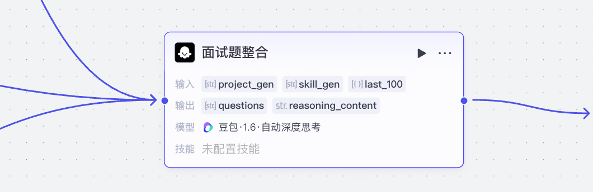
该节点接收3个输入：
- project_gen：基于项目提出的问题
- skill_gen：基于技能点提出的问题
- last_100：最近的100条面试题
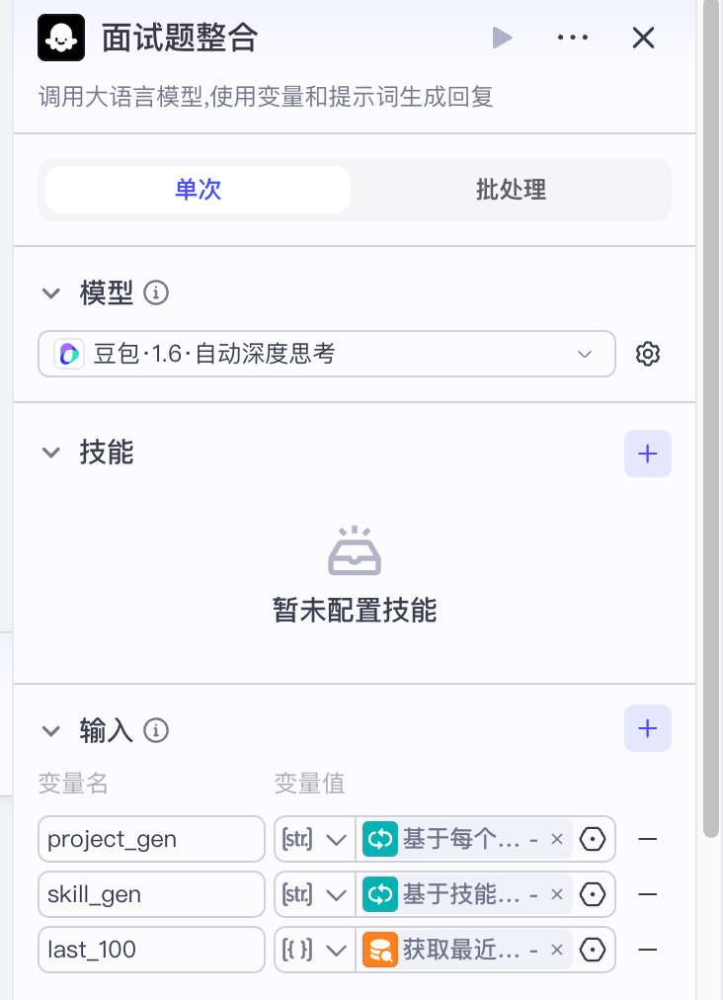
系统提示词：
你是一个面试题整理整合专家，能够根据输入的多个来源的面试题进行整合：
1. 如果是基础比如java、python、mysql之类的，对于每个技术点保留2个就可以了。 如果是对于比较核心的比如RAG、agent的技术，数量则需要进行增加， 至少4个以上；其他的比如transformer的，2个核心问题即可
2. 项目面试题可以直接保留
3. 面试题不可出现重复
4. 整合的结果以字符串数组数据格式返回，一个问题一个元素
5. 问题要进行书面化表达，不要出现“你好”，“那你们是怎么做的”之类的过于口语化的表达，如果有类似的表达，提来出来问题本身。
6. 提问几个常见的人事问题，比如：为什么从上家公司离职，如果你的领导当面说你能力不行你该怎么办等问题，这部分问题需要有适当难度。
用户提示词：
输出：
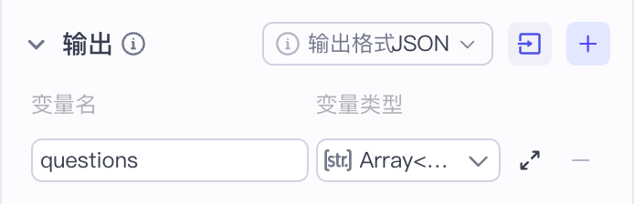
五、工作流调试¶
工作流搭建好后，我们上传一份简历文件，并试运行工作流，最终节点输出如下：
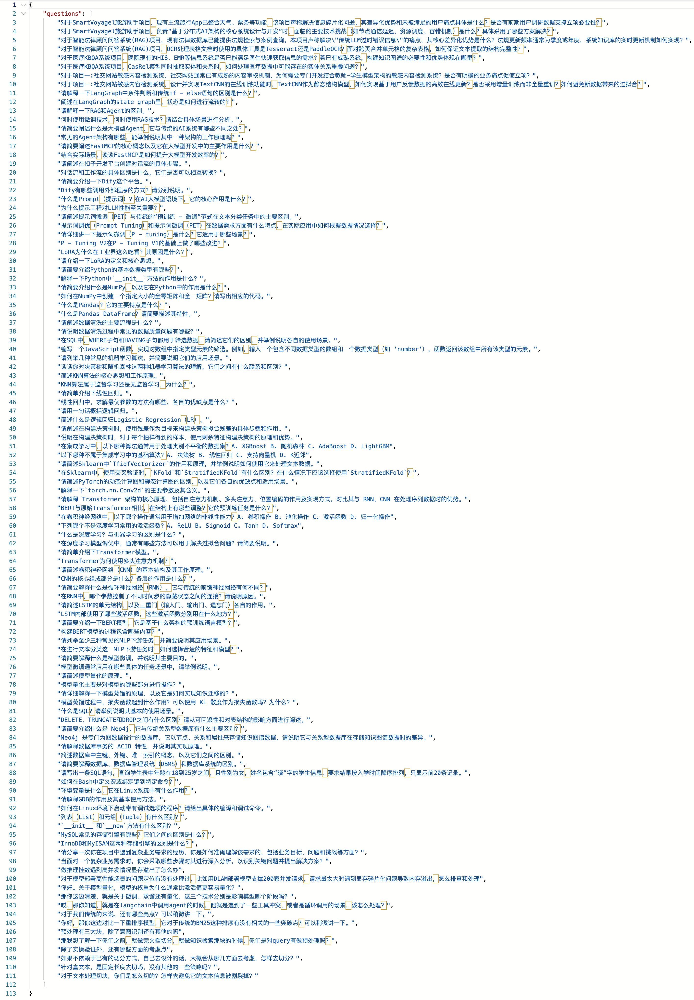
在调试的过程中，运行日志如下：
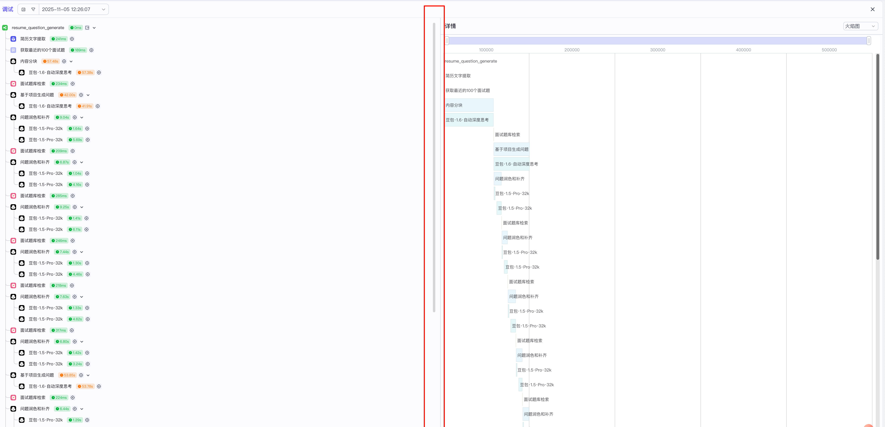
我们可以看到，循环执行的次数较多，同时，这个工作流消耗的token数也是非常高，且最终消耗token数也是10万级别的。
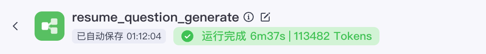